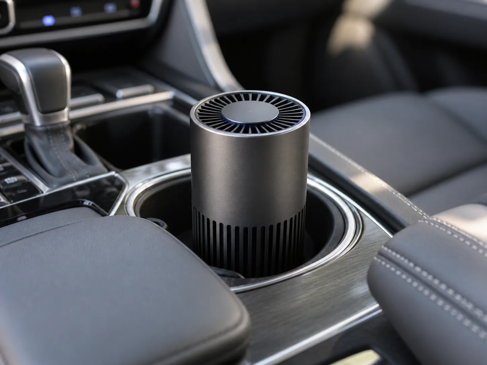
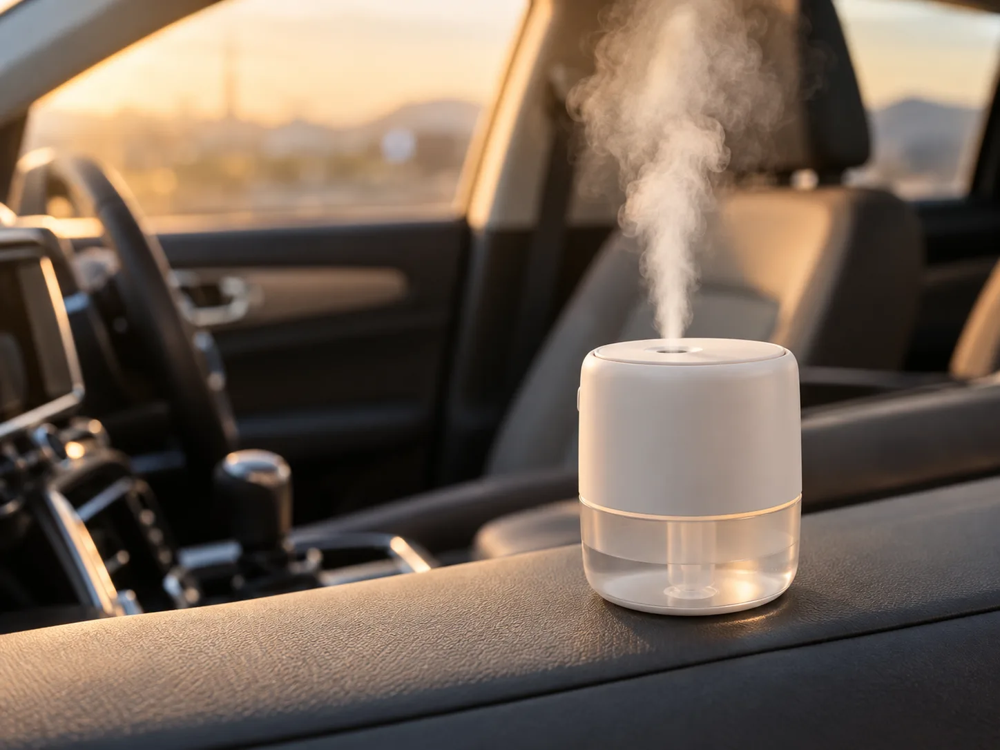
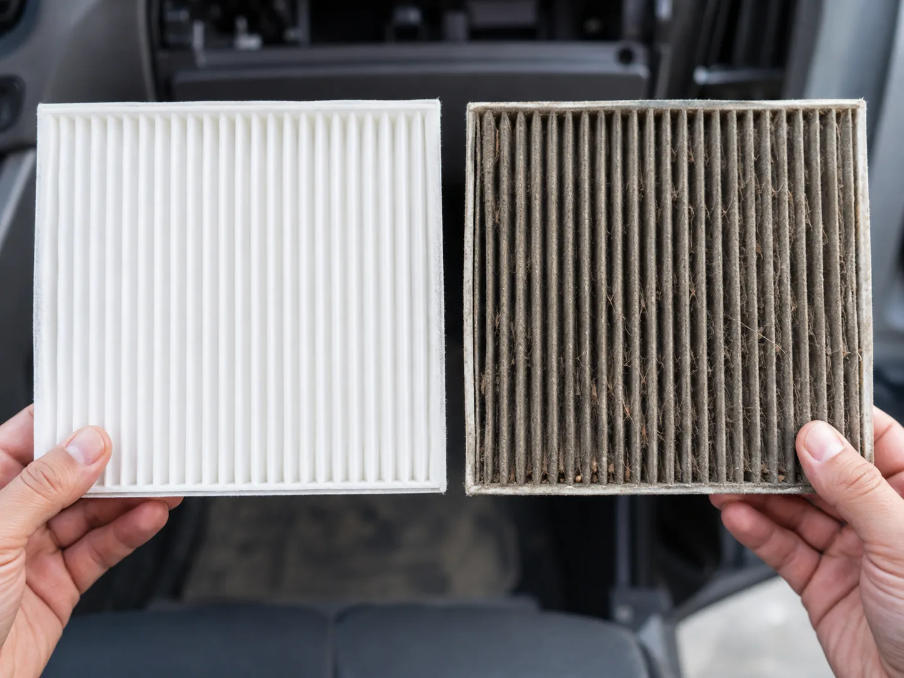
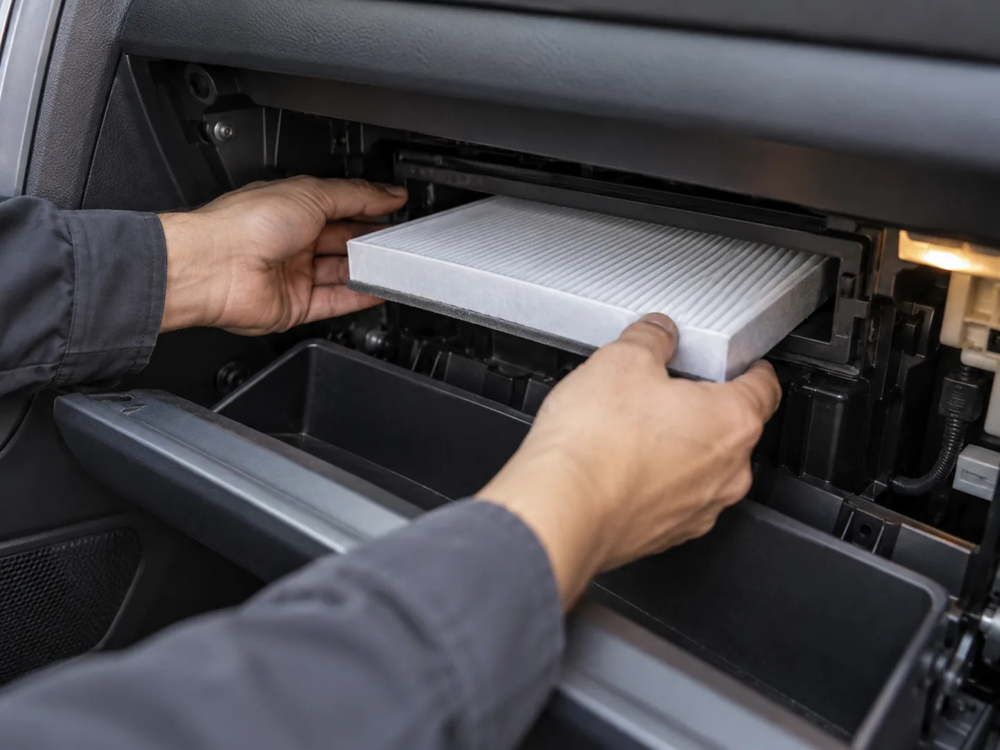

▲ 컵홀더형 차량용 공기청정기 — 광고 문구만큼의 정화력을 기대할 수 있을까.
"미세먼지 99.97% 제거", "차량용 헤파필터 탑재"— 온라인 쇼핑몰에서 차량용 공기청정기를 검색하면 흔히 보이는 문구다. 그런데 2019년 환경부·산업통상자원부·한국생활안전연합이 차량용 공기청정기 5개 모델을 공동조사한 결과는 사뭇 달랐다. 미세먼지 제거능력을 표시한 두 개 모델(아이젠트, 정인일렉텍)의 실제 성능은 표시 성능 대비 4~5%에 불과했고, 나머지 세 개 모델(ipipoo·불스원·노루페인트)은 아예 성능 수치를 표시하지도 않았다. 광고 문구와 실제 스펙 사이의 간극이 이렇게 컸다.
차량용 공기청정기와 가습기, 정말 효과가 있는 걸까. 있다면 어떤 스펙을 보고 골라야 할까. 그리고 밀폐된 차 안에서 가습기를 켜는 게 정말 안전한 걸까. 스펙과 실제 데이터를 하나씩 뜯어봤다.
① "표시 성능 대비 4~5%"— 컵홀더 공기청정기의 민낯
시중 차량용 공기청정기 대부분은 시거잭이나 컵홀더에 꽂아 쓰는 소형 제품이다. 문제는 이런 제품 상당수가 미세먼지 제거 성능 자체를 표시하지 않거나, 표시하더라도 실제 성능과 크게 차이가 난다는 점이다. 앞서 언급한 2019년 정부 공동조사가 이를 뒷받침한다.
| 제조사 | 미세먼지 제거능력 표시 | 실제 성능(표시 대비) |
|---|---|---|
| 아이젠트 | 표시함 | 약 4~5% |
| 정인일렉텍 | 표시함 | 약 4~5% |
| ipipoo | 표시 안 함 | 확인 불가 |
| 불스원 | 표시 안 함 | 확인 불가 |
| 노루페인트 | 표시 안 함 | 확인 불가 |
온라인 커뮤니티 반응도 비슷하다. 클리앙·보배드림 등에서는 "컵홀더형은 사실상 무용지물", "뒷좌석에 설치하면 손이 안 닿아 켜고 끄기도 불편하다"는 후기가 반복적으로 올라온다. 운전석·조수석 컵홀더는 이미 음료로 차 있는 경우가 많아 설치 위치 자체가 애매하다는 지적도 많다. 정리하면 소형 컵홀더형 공기청정기는 "차 안 공기를 정화한다"기보다는 "탈취제에 가깝다"는 게 실사용자들의 공통된 평가에 가깝다.
② CADR·HEPA, 숫자는 어떻게 부풀려지나
CADR(Clean Air Delivery Rate, 청정공기공급률)은 공기청정기가 단위 시간당 얼마나 많은 깨끗한 공기를 만들어내는지를 나타내는 지표다. 다만 두 가지 함정이 있다.
첫째, 제품 스펙에 적힌 CADR 수치는 대부분 최고 팬 속도에서 측정한 값이다. 그런데 실제 주행 중에는 소음 때문에 대부분 1~2단(저속)으로 사용하므로, 표시된 CADR만큼의 정화력을 기대하기 어렵다. 둘째, CADR 측정은 0.3㎛보다 크고 무거운 초미세먼지(PM2.5)·미세먼지(PM10) 저감 효과를 온전히 반영하지 못한다는 한계도 지적된다.
HEPA(H13~H14) 등급은 0.3㎛ 입자를 99.97% 이상 걸러내는 것으로 정의되지만, 이는 반도체 공정실·병원 수술실 등 대형 공조 시스템에 적용되는 EN1822·ASHRAE 52.2 국제 규격 기준이다. 문제는 여기서부터다.
③ "차량용 헤파필터는 없다"— 광고 문구 vs 실제 규격
차량용 에어컨(캐빈) 필터와 가정용·산업용 헤파필터는 애초에 측정 기준이 다르다. 차량용은 독일공업규격 DIN 71460-1을 사용해 0.3~10.0㎛ 크기의 미세먼지를 통과시켜 제거 효율을 측정하는 반면, 헤파필터는 ASHRAE 52.2·EN1822 기준으로 "가장 제거가 안 되는 입자"의 효율을 기준으로 등급을 매긴다. 두 기준은 시험 방식 자체가 달라 단순 비교가 불가능하다.
| 흔한 광고 문구 | 실제 근거/한계 |
|---|---|
| "헤파필터급 99.97% 제거" | EN1822·ASHRAE는 대형 공조 전용 규격. 차량용 제품에 공식 적용된 사례는 없음 |
| "H11 등급 필터" | 차량용 시험(DIN 71460-1) 결과를 헤파 등급 표기로 임의 전환한 경우가 다수 |
| "CADR OOO 인증" | 대부분 최고 풍속 기준 측정치. 실사용(저속 모드)에서는 수치 그대로 기대하기 어려움 |
| "미세먼지 완벽 차단" | PM2.5·PM10 등 입자 크기별 제거율은 별도 확인 필요, 유해가스·냄새 제거는 활성탄 유무가 좌우 |
그렇다면 무엇을 봐야 할까. 등급 표기보다 DIN 71460-1(미세먼지 제거 효율)과 DIN 71460-2(유해가스 제거 효율, 톨루엔·노멀뷰테인·아황산가스의 1분·5분 후 제거율) 수치를 실제로 공개하는 제품인지가 훨씬 신뢰할 만한 기준이다. 이 수치를 공개하지 않는 제품은 등급 문구가 아무리 화려해도 한 번 의심해볼 필요가 있다.
④ 가습기는 왜 밀폐된 차 안에서 역효과를 낼 수 있나

▲ 밀폐된 차 안에서 미니 가습기를 켜면 습도가 빠르게 올라간다.
겨울철 건조함 때문에 차량용 미니 가습기를 컵홀더나 대시보드에 올려두는 운전자가 적지 않다. 하지만 밀폐된 차량 실내는 가정과 조건이 다르다. 두 가지 위험이 있다.
첫째, 김서림·결로 악화다. 차 안에 김이 서리는 원리는 차가운 컵 표면에 물방울이 맺히는 것과 같다. 실내외 온도 차이가 큰 상태에서 실내 습도까지 높아지면 앞유리·창문 표면에 이슬점이 형성되며 김서림이 심해진다. 히터를 내기 모드로 오래 틀면 이미 실내 습도가 오르는데, 여기에 가습기까지 더하면 습도 상승이 가중돼 시야 확보에 오히려 방해가 될 수 있다. 운전 중 시야 방해는 곧 사고 위험으로 이어진다.
▲ 실내외 온도차에 가습기 습도까지 더해지면 김서림이 오히려 심해질 수 있다.
둘째, 세균 번식 위험이다. 초음파식 미니 가습기는 정수된 물을 쓸 경우 염소 성분이 없어 세균이 빠르게 번식할 수 있다는 점이 알려져 있다. 매일 물을 갈고 완전히 건조시키지 않으면 위생 문제가 생기기 쉬운데, 좁고 환기가 어려운 차량 실내는 세척·건조 관리가 가정보다 훨씬 번거롭다. 상대적으로 물을 끓여 수증기를 내보내는 가열식은 자체 살균 효과가 있어 세균 번식 우려가 적지만, 차량 전원(시거잭 12V)으로 가열식을 안정적으로 구동하는 제품 자체가 많지 않다.
⑤ 그래서 뭘 사야 하나 — 실전 체크리스트

▲ 공기청정기보다 캐빈 필터 상태 점검이 실제 공기질 개선에 더 직접적인 영향을 준다.
지금까지의 내용을 종합하면 차량용 공기청정기·가습기를 고르는 기준은 명확해진다.
- 에어컨(캐빈) 필터 교체가 최우선 — 컵홀더형 소형 공기청정기보다 순정·사제 캐빈 필터를 6개월(약 5,000~1만km) 주기로 교체하는 편이 실제 정화 효과 면에서 훨씬 확실하다.
- 등급 문구 대신 DIN 71460 수치를 확인 — "헤파급", "H11" 같은 표기보다 미세먼지·유해가스 제거 효율(%) 수치를 공개하는 제품을 고른다.
- 활성탄 포함 여부 체크 — 냄새·배기가스·VOC 제거가 목적이라면 헤파형 단독보다 활성탄이 결합된 콤비형이 실용적이다.
- 가습기는 신중하게, 쓴다면 짧게 — 장시간 상시 가동보다는 건조할 때 짧게 쓰고, 외기 모드로 환기해 습도를 낮춰주는 것이 김서림 예방에 더 효과적이다. 매일 물을 교체하고 완전히 건조시켜야 세균 번식을 줄일 수 있다.
- 정 급하면 에어컨이 낫다 — 커뮤니티 후기에서도 반복되는 조언이지만, 미세먼지가 심한 날은 창문을 닫고 에어컨(내기 순환)을 켜는 것이 저가 공기청정기보다 체감 효과가 크다는 의견이 많다.

▲ 글러브박스 뒤편 캐빈 필터 하우징에 새 필터를 교체하는 모습 — 등급 문구보다 이 작업 하나가 체감 공기질을 더 크게 바꾼다.
그렇다면 실제 매장이나 온라인에서 제품을 고를 때는 무엇을 손으로 확인해야 할까. 우선 제품 상세페이지나 시험성적서에 CADR 실측치가 몇 ㎥/h인지, 그리고 그 수치가 최고 풍속·저속 중 어느 조건에서 측정됐는지가 함께 표기돼 있는지 확인한다. CADR 숫자만 크게 강조하고 측정 조건을 밝히지 않는 제품은 광고용 수치일 가능성이 높다. 다음으로 KC 안전인증(전기용품 및 생활용품 안전관리법에 따른 KC마크) 여부와, 필터 자체의 시험성적서(공인시험기관 발급, DIN 71460-1·71460-2 또는 이에 준하는 국내 시험 결과)를 제품 페이지에서 열람할 수 있는지를 본다. 시험성적서 이미지나 PDF를 공개하지 않고 "인증 완료"라는 문구만 내세우는 제품, 또는 시험 기관명·시험 일자가 빠진 캡처 이미지만 올려둔 제품은 재차 의심해볼 필요가 있다. 결국 "몇 % 제거"라는 말보다 "누가, 언제, 어떤 조건으로 측정했는가"가 공개돼 있는지가 실질적인 판단 기준이다.
차량용 에어컨 필터 교체 방법과 점검 요령은 카프리즘이 별도로 정리한 캐빈필터 가이드 기사에서 확인할 수 있다. 캐빈필터 교체 가이드 보기
결국 핵심은 "등급"이 아니라 "수치"다. 화려한 인증 마크와 등급 문구보다, DIN 71460 같은 실측 데이터를 공개하는지, 그리고 필터 교체 주기를 지키고 있는지가 차량 실내 공기질을 좌우한다.